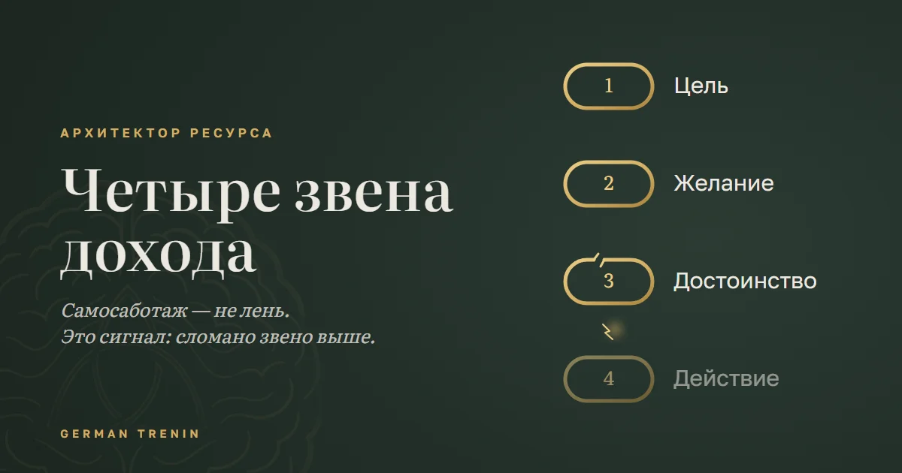

Четыре звена дохода

Почему одни делают шаги, и деньги растут, а другие делают то же самое, и всё откатывается назад?
Потому что действие — это не начало. Это результат.
Росток не начнёт расти, пока нет воды и почвы. Так и с деньгами: если внутри что-то сломано, все усилия уходят мимо цели.
Пройдём по четырём звеньям и посмотрим, где застреваете вы.
1. Цель
Отложите телефон. Расслабьтесь. Все тревоги мысленно заприте в ванной — они никуда не убегут.
И спросите себя: чего я на самом деле хочу от жизни?
Кто-то обнаружит пустоту. Кто-то — картинку из рекламы. А у кого-то появится что-то до боли конкретное.
2. Желание
Теперь почувствуйте это желание. Какое оно на вкус? Сделайте его громче.
Представьте, что оно уже у вас в руках. Есть радость? Азарт? Или пресно?
А может, внутри кто-то говорит: «Это не для тебя». Или поднимается злость, обида. Или как будто ты не здесь, висишь, и это всё мираж.
3. Достоинство
Где-то внутри радостно. Но рядом тихий голос: «Не по мне. Я этого не достоин/а».
Приходят тяжесть, обречённость. Слабеют плечи и ноги. Внутри трепещет тревога.
Желание может быть сильным. Но если нет внутреннего права его иметь, шаг к нему не сделать.
4. Действие
Что можно сделать в таком состоянии? Убежать. Спрятаться. Сжаться.
В жизни это выглядит не так очевидно. Психика включает защиту, и она принимает знакомые формы.
Убежать. Бурная деятельность, только не к цели, а в обратную сторону. Вы берёте дополнительную смену и приходите домой без сил. Вкладываетесь в заранее провальное дело. Или вместо действия бесконечно его обсуждаете.
Спрятаться. Не высовываться. Не заявлять о себе, не поднимать цену, не просить повышения. Перекладывать решения на других: на партнёра, начальника, обстоятельства. Ждать подходящего момента, который так и не наступает.
Сжаться. Замереть и терпеть. Экономить на себе, жить на минимуме, держаться за нелюбимую работу, потому что «хоть что-то». Откладывать до понедельника, до Нового года, до лучших времён.
Узнаёте свою стратегию?
Дисциплина тут не помогает. Уговоры тоже. Ваши силы заканчиваются, а внутренним программам силы не нужны. Они просто работают.
Главное
Самосаботаж — не лень. Это сигнал: сломано звено выше.
Поэтому аффирмации и тренинги часто не работают. Они чинят действие и не видят, что сломалось раньше.
— Герман, Архитектор ресурса